Técnico en Auxiliar de Enfermería • Exposición de Malformaciones Congénitas Genéticas
📌 Módulo Introductorio⏱️ Exposición Base
Introducción a las Malformaciones Congénitas y Genética Basal
Para empezar a hablar sobre las malformaciones congénitas genéticas, puntualmente trisomías 21, 18 y 13, debemos abordar primero el tema de la reproducción y multiplicación de cromosomas que dan origen a un ser humano.
Tenemos que, todos los seres humanos tenemos 46 cromosomas (23 pares), mitad de la madre, mitad del padre.
Para empaquetar la mitad de los cromosomas en un espermatozoide o en un óvulo, en realidad se empieza con una sola célula que tiene 46 cromosomas; digamos que estamos haciendo un óvulo para la madre, solo voy a mostrar un par de cromosomas, pero recuerden que los 23 pares hacen esto.
Por tanto, se inicia el proceso de meiosis, por el que se generan las células sexuales, y los cromosomas se replican; así pues, ahora tienen la forma de una 'X' y, aunque hay dos copias de ADN, todavía decimos que se trata de un cromosoma, ya que ambos están enganchados en el medio por una estructura llamada centrómero.
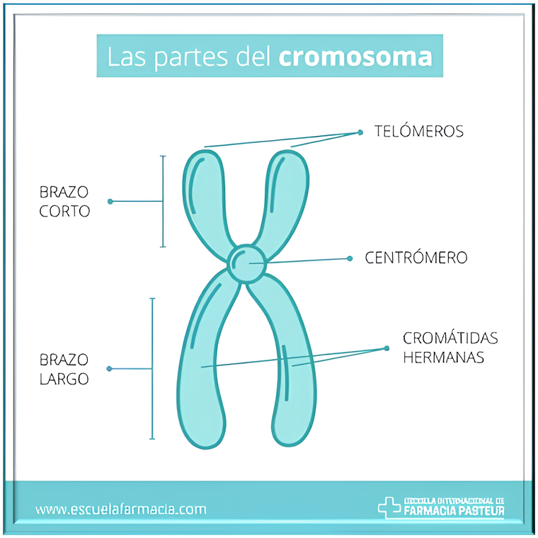
Figura 1: Estructura del cromosoma en forma de 'X'
La célula se divide en dos y los cromosomas emparejados se separan, por lo que cada una estas células tiene ahora 23 cromosomas.
Las dos copias del cromosoma se separan y las células se dividen de nuevo, lo que significa que ahora tenemos cuatro células, cada una de ellas todavía con 23 cromosomas.
Ahora están listas para emparejarse con un espermatozoide del padre, que también tiene 23 cromosomas, lo que hace un total de 46 cromosomas, y nueve meses después tenemos un bebé.
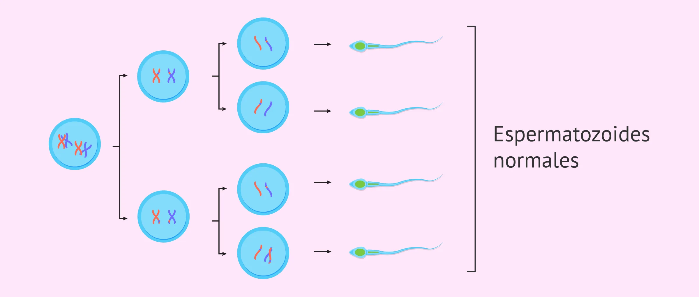
Esquema de meiosis normal donde resultan 4 gametos haploides con 23 cromosomas cada uno
Uno de estos pares, el de los cromosomas sexuales, determina el sexo del individuo y se representa en el cariotipo en la última posición. Las 22 parejas de cromosomas restantes se conocen como cromosomas autosómicos y en el cariotipo se colocan en orden decreciente de tamaño.
¿Qué son las Trisomías?
Es una alteración genética (Aneuploidía) donde existe un cromosoma extra en un par determinado, dando un total de 47 cromosomas.
Mecanismo Principal: El mecanismo por el cual se produce ese cromosoma extra es por la No disyunción meiótica, que es el fallo en la separación de los cromosomas durante la formación del óvulo o espermatozoide. Representa más del 90% a 95% de los casos.
Tipos de Trisomía
Hay 3 tipos de trisomía:
La Trisomía Libre que se representa en esta imagen:
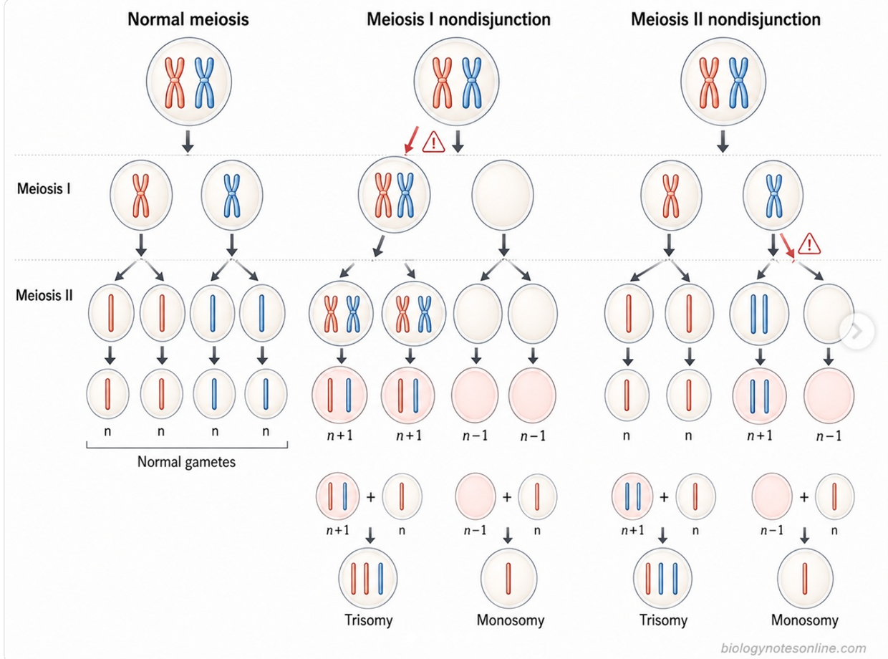
Esquema de no disyunción en Meiosis I y Meiosis II
Como vemos en la gráfica, la no disyunción u error de división puede ocurrir en dos momentos diferentes: en el primer o en el segundo nivel.
Si el fallo ocurre en el primer nivel (Meiosis I): La célula madre no divide bien sus parejas de cromosomas. Normalmente irían 23 estructuras a cada lado, pero al ocurrir el error, una célula se roba el par completo en forma de "X" y la otra célula se queda completamente vacía o en ceros. Al pasar al segundo nivel, esa célula con exceso se divide y rompe las "X", dejando óvulos o espermatozoides con dos palitos. Cuando llega el gameto de la pareja a completar la carga, se genera una sobrecarga por la presencia de ese tercer cromosoma.
Si la falla ocurre en el segundo nivel (Meiosis II): Las dos células del primer nivel se forman de manera correcta (con 23 estructuras cada una). Pero al momento de pasar al segundo nivel y dividirse, los palitos no se separan del centrómero de forma equitativa. En lugar de ir un palito a cada célula individual, los dos palitos pasan juntos a una sola célula, dejando a su vecina vacía. Al llegar la fecundación, se repite la falla de sobrecarga y terminamos viendo 3 cromosomas en el bebé.
El segundo y tercer tipo de trisomía son Translocación y en Mosaico:
En la translocación ocurre un accidente micro estructural. Una parte muy pequeña del cromosoma se parte y, al flotar por la célula, se pega físicamente a otro cromosoma de otro tipo (por ejemplo, el 21 pegado al 14). Cuando se junta el óvulo y el espermatozoide y hacemos el conteo en su par correspondiente, vemos solo 2 palitos sueltos. Sin embargo, si miramos el cromosoma del otro tipo, veremos que tiene un "bulto" pegado y es más largo de lo normal. Ese bulto es el material extra. De ahí en adelante, el cuerpo va a leer la información tres veces porque el material genético del cromosoma extra está presente, solo que está camuflado en otra parte del manual.
En el mosaico, el proceso de copia y división empieza 100% bien. Se realiza la fecundación y la primera célula del bebé se conforma de manera perfecta con sus dos segmentos normales. El problema ocurre un poco después, durante el crecimiento del embrión. En alguna de esas réplicas celulares se genera un error y el cuerpo produce una célula hija con 3 segmentos o palitos y la otra con uno solo. La célula que se queda con uno solo muere, pero la que tiene 3 sobrevive y se sigue multiplicando. Al final, el bebé nace con un "mosaico" celular: un grupo de células normales y otro grupo con la trisomía.
Para detectar esa carga de más, se realiza una evaluación de esa estructura genética llamada Cariotipo, el cual permite examinar el mapa cromosómico completo para identificar la presencia de los tres cromosomas en el par 21, 18 o 13.
Patrones de Cariotipo Normal
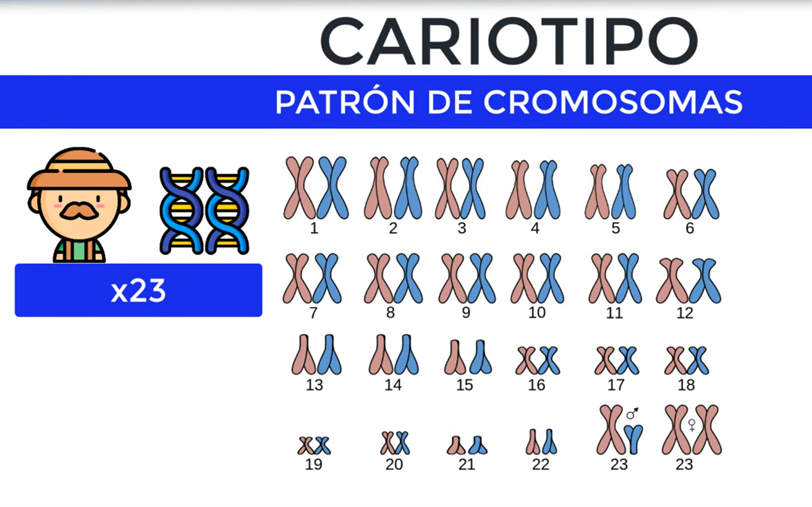
CARIOTIPO ILUSTRACIÓN
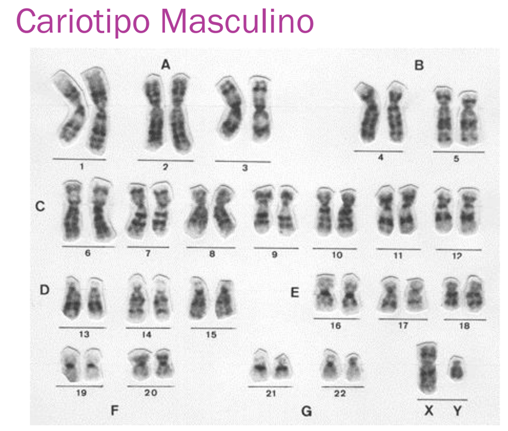
CARIOTIPO REAL MASCULINO
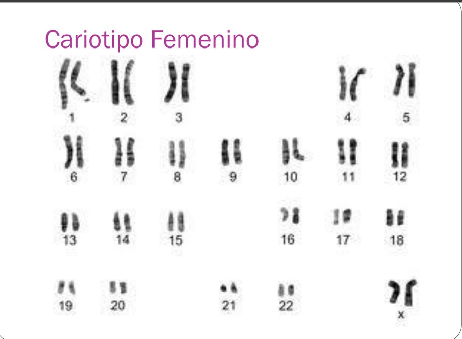
CARIOTIPO REAL FEMENINO
📌 Módulo 2🧬 Cromosoma 21
Trisomía 21 - Síndrome de Down
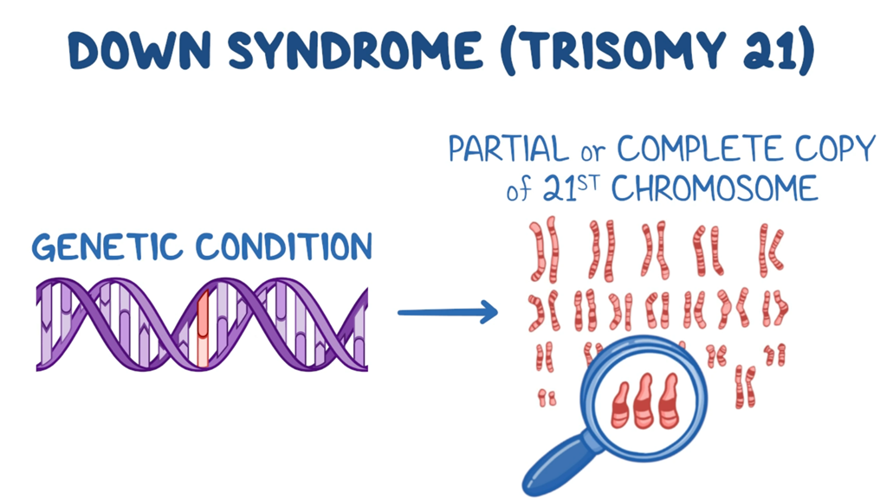
Esquema genético de la copia extra en el par 21
Es una afección genética asociada a una copia parcial o completa del cromosoma 21. Una persona con síndrome de Down pasa de tener 46 cromosomas a 47, con una copia extra puntualmente en el cromosoma 21.
💡 Dato adicional: El síndrome de Down debe su nombre al médico británico John Langdon Down, quien describió por primera vez esta afección como "mongolismo", porque los rasgos físicos de estos individuos eran similares a los de las personas de la raza mongola de Blumenbach. Dado que el nombre era inexacto y peyorativo, en la década de los setenta se cambió por el de síndrome de Down.
Recuerdan que hablaba inicialmente de la No Disyunción… bueno, para este caso del cromosoma 21, se ve así en la muestra del cariotipo (repaso nuevamente de la no disyunción, las divisiones tienen que ser equitativas):
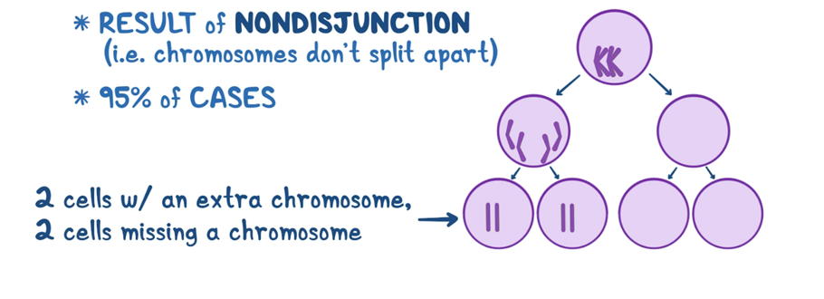
Esquema de no disyunción meiótica resultando en Trisomía 21
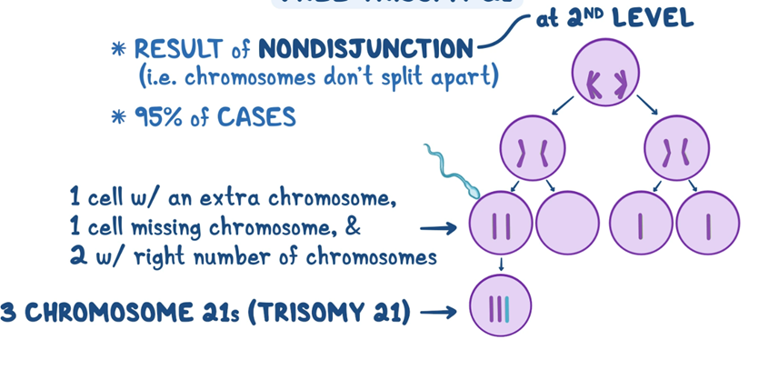
Esquema de fertilización con gameto anómalo produciendo 3 cromosomas 21
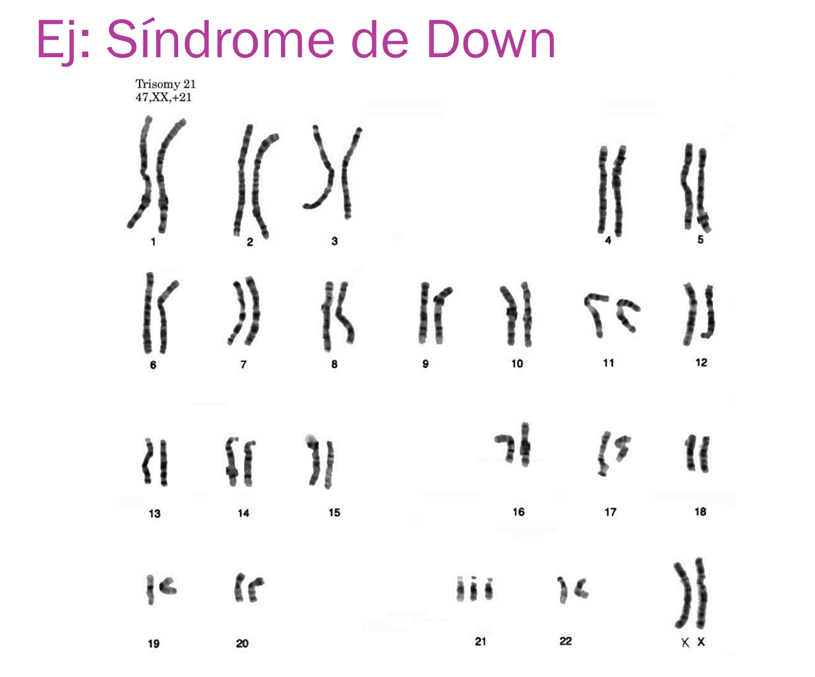
Muestra de cariotipo real mostrando el triplete en el par 21
Factores de Riesgo y Epidemiología
Un factor de riesgo importante para el síndrome de Down es la edad materna. Esta afección se produce aproximadamente una vez de cada 1.500 nacimientos en los que la madre es menor de 20 años, frente a una de cada 25 en los que la madre es mayor de 45 años.
Afectaciones Asociadas
Cardíacas: Defectos cardíacos congénitos, así como defectos del tabique ventricular y auriculoventricular (DSAV / CIV).
Hematológicas: Pueden desarrollar afecciones sanguíneas, sobre todo leucemias.
Gastrointestinales: Atresia duodenal y enfermedad de Hirschsprung (afección caracterizada por la ausencia de células nerviosas específicas de los intestinos).
Neurológicas y Cognitivas: Discapacidad intelectual y mayor riesgo de enfermedad de Alzheimer.
Reproductivas: Problemas reproductivos como infertilidad.
Características Físicas Predominantes
En las características físicas predominan: un único pliegue palmar transversal en las manos, un hueco entre los dos primeros dedos de los pies, un perfil facial plano, cara redonda, mentón, boca y orejas pequeñas, cuello corto.
Fotografía y esquema de la línea palmar simiana
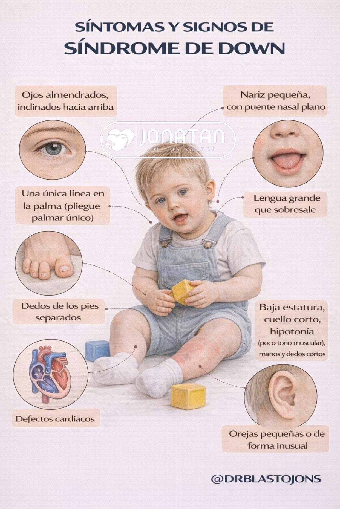
Infografía detallada con ojos almendrados, puente nasal plano, macroglosia, hipotonía y orejas pequeñas
Pruebas de Detección Prenatal
Durante el embarazo se pueden realizar algunas pruebas de detección, y ciertos marcadores sugieren un mayor riesgo de que el bebé pueda tener síndrome de Down.
1. Análisis de sangre (Segundo Trimestre - Perfil Bioquímico):
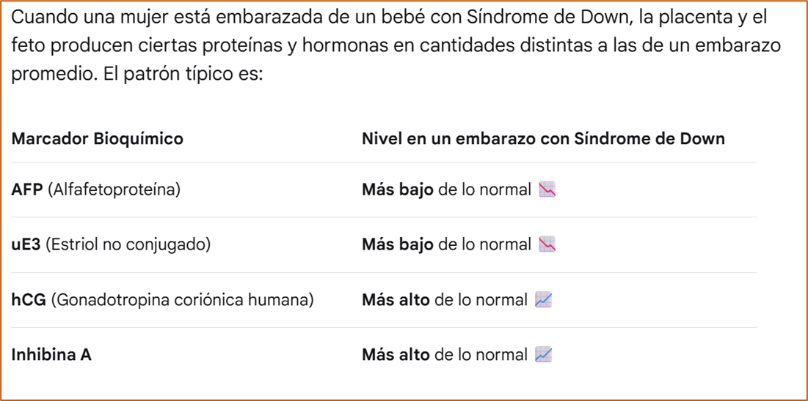
Tabla con niveles típicos: AFP baja, uE3 bajo, hCG alta e Inhibina A alta en Down
2. Ecografía (Translucencia Nucal):
Prueba de imagen entre las semanas 11 y 14 de embarazo donde los médicos buscan la translucencia nucal.
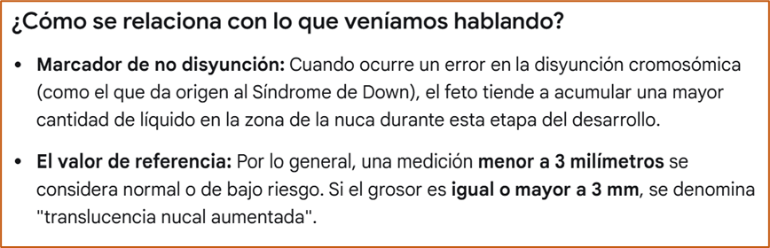
Explicación de medición: < 3mm normal / ≥ 3mm aumentada por acumulación de líquido
*Hay que tener en cuenta que esto NO es un diagnóstico definitivo para confirmar el síndrome de Down, sino una alerta que eleva la probabilidad de un defecto congénito.
Cuidados de Enfermería en Síndrome de Down
Control prenatal y monitorización obstétrica: Seguimiento ecográfico riguroso, preparación para pruebas diagnósticas y evaluación de riesgos maternos.
Soporte emocional y comunicación a los padres: Comunicación empática de la noticia, reducción de la ansiedad y el duelo, y conexión con redes de apoyo.
Planificación del nacimiento (Parto de alto riesgo): Coordinación interdisciplinaria, preparación de la sala de partos y manejo del primer contacto (apego precoz).
🍼 Dato curioso y clínico sobre la Lactancia Materna: A diferencia de un recién nacido sin alteraciones, los bebés con Síndrome de Down presentan de forma característica hipotonía muscular generalizada y una cavidad oral pequeña con macroglosia relativa. Debido a esto, no nacen con un reflejo de succión fuerte y coordinado de manera natural, lo que dificulta el agarre al pecho y la extracción eficaz de leche durante los primeros días. El proceso de lactancia materna requiere de paciencia, posturas adaptadas (como el apoyo firme de la barbilla y mejillas del bebé), técnicas de estimulación oral por parte de enfermería y, en muchos casos, métodos de apoyo temporal o extracción para asegurar una nutrición adecuada sin agotar al lactante.
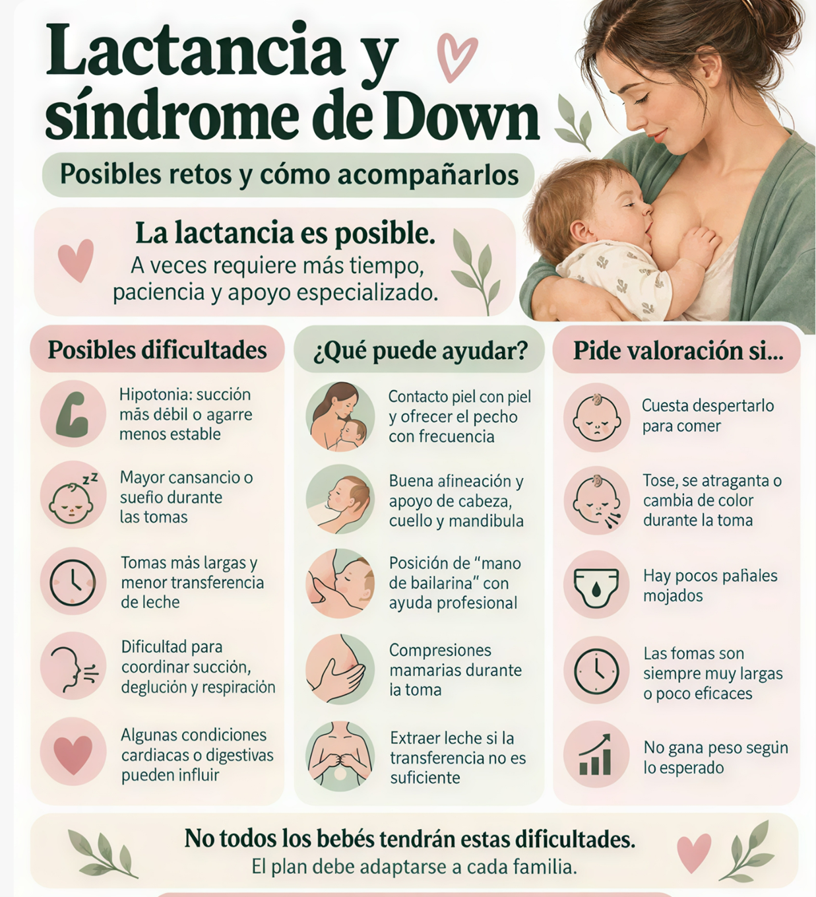
📌 Módulo 3🧬 Cromosoma 18
Trisomía 18 - Síndrome de Edwards
Aquí la copia adicional extra se encuentra en el cromosoma 18.
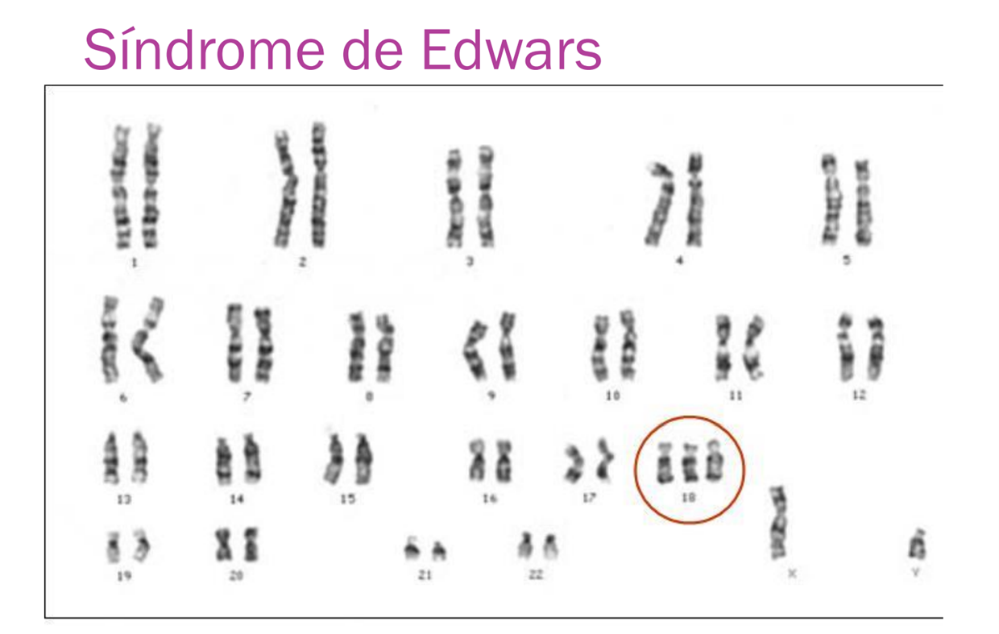
Esta afección es la segunda trisomía autosómica más común después de la trisomía 21 y se asocia con un amplio espectro de anomalías congénitas, incluyendo defectos cardíacos, anomalías craneofaciales, restricción del crecimiento y un deterioro significativo del neurodesarrollo.
Al igual que en la anterior trisomía, un factor de riesgo es la edad avanzada de la madre. En este caso se tiene un riesgo de recurrencia entre el 0,5% hasta el 20% en embarazos posteriores.
💡 Dato curioso: Descrito por primera vez en 1960, en donde se describió a un recién nacido con múltiples malformaciones congénitas y déficits cognitivos. La trisomía 18 tiene un alto riesgo de pérdida fetal y muerte fetal.
Afectaciones Asociadas
Prenatalmente: Restricción del crecimiento intrauterino (RCIU), polihidramnios, agenesia del cuerpo calloso, quistes del plexo coroideo, engrosamiento nucal, braquicefalia, manos cerradas con dedos índices superpuestos, defectos cardíacos, onfalocele y arteria umbilical única.
Después del Nacimiento:
Cardiovascular (90% de los pacientes): Comunicación interventricular o auricular, conducto arterioso persistente, tetralogía de Fallot, aorta cabalgante, coartación de la aorta, síndrome de hipoplasia del ventrículo izquierdo y enfermedad cardíaca polivalvular (que afecta a dos o más válvulas, generalmente aórtica y pulmonar).
Pulmonar: Hipoplasia pulmonar, traqueobroncomalacia, laringomalacia, apnea obstructiva y central, e hipertensión pulmonar de inicio temprano.
Gastrointestinal: Hernia umbilical, atresia esofágica con fístula traqueoesofágica, estenosis pilórica, atresia ileal, malrotación, divertículo de Meckel y diástasis de rectos abdominales.
Genitourinario: Criptorquidia, hipospadias, micropene, hipertrofia del clítoris, hipoplasia de labios mayores, disgenesia ovárica, útero bífido, riñón en herradura, agenesia renal e hidronefrosis.
Sistema Nervioso Central (30% de pacientes): Hipoplasia cerebelosa, meningoencefalocele, anencefalia, hidrocefalia, holoprosencefalia, malformación de Arnold-Chiari e hipoplasia del cuerpo calloso.
Características Físicas Detalladas
Cráneo: Microcefalia, estrechamiento bitemporal y occipucio prominente.
Rostro: Rostro triangular y asimétrico con parálisis facial.
Ojos: Microftalmia, hipertelorismo, epicanto, fisuras palpebrales cortas, coloboma del iris, catarata, opacidad corneal, cresta supraorbitaria hipoplásica y pigmentación retiniana anormal.
Nariz y Boca: Puente nasal prominente, atresia de coanas, microretrognatia, microstomía, paladar ojival estrecho, labio hendido y paladar hendido.
Orejas: Microtia, apéndices preauriculares, orejas de implantación baja o retrovertidas y displásicas.
Esquelético: Cuello corto, esternón corto, pecho ancho con pezones separados, osificación incompleta de clavícula, escoliosis, tórax en embudo, pelvis estrecha, dislocación de cadera, manos cerradas con dedos superpuestos (índice sobre medio, meñique sobre anular) y pies en mecedora con calcáneos prominentes.
Pruebas de Detección
Cribado sérico materno (niveles bajos de AFP, hCG y estriol no conjugado) combinado con ecografía de translucencia nucal. Las pruebas prenatales no invasivas de ADN fetal libre combinadas con ecografía alcanzan un valor predictivo positivo del 100% en el segundo trimestre.
Se recomienda la biopsia de vellosidades coriónicas (procedimiento médico prenatal que consiste en extraer una pequeña muestra de tejido de la placenta para analizar el material genético del bebé) si el cribado prenatal sugiere un alto riesgo de aneuploidía fetal (número incorrecto de cromosomas).
Cuidados de Enfermería Específicos
Se repiten los cuidados del módulo anterior, adicionando seguimiento interdisciplinar del crecimiento, desarrollo físico, motor y cognitivo.
Examen neurológico regular.
Remisión al nacer a oftalmología, ecocardiograma neonatal y ecografía abdominal cada 6 meses hasta la adolescencia para vigilar apariciones neoplásicas.
Evaluación ortopédica continua por contracturas o escoliosis.
Consulta con neumología y estudio del sueño ante apneas.
Derivación a gastroenterología y nutrición para soporte enteral o manejo del reflujo gastroesofágico.
🏥 Caso Clínico Real:
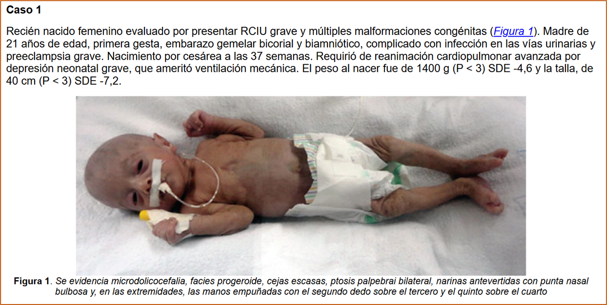
📌 Módulo 4🧬 Cromosoma 13
Trisomía 13 - Síndrome de Patau
Aquí la copia adicional extra se encuentra en el cromosoma 13.
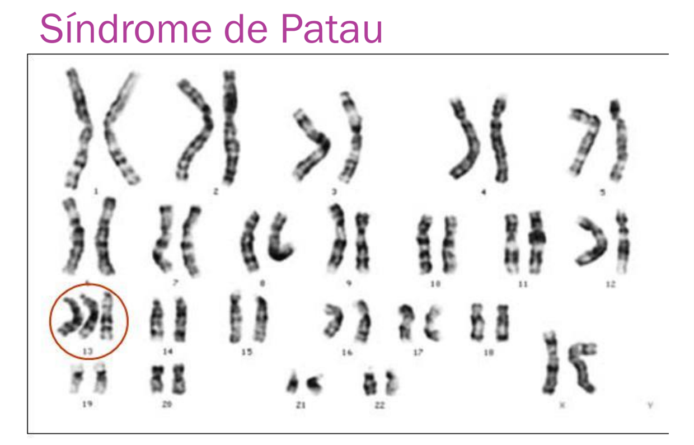
Se produce en aproximadamente 1,7 por cada 10.000 embarazos. Se caracteriza por discapacidad intelectual grave, múltiples anomalías congénitas, defectos cardíacos congénitos y anomalías urogenitales. Está asociado con una alta mortalidad neonatal; la mayoría de los lactantes afectados muere dentro de las primeras semanas de vida.
Afectaciones Asociadas y Sobrevida
Las crisis de apnea en la primera infancia son frecuentes.
La discapacidad intelectual es extremadamente grave.
Del 57% al 80% de los lactantes sufren anomalías cardiovasculares congénitas graves.
Características Físicas Clínicas
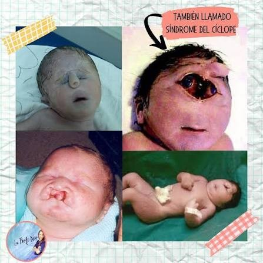
Muestra holoprosencefalia severa, labio leporino bilateral, ciclopia y anomalías severas de línea media
Pruebas de Detección
Se realiza cribado prenatal no invasivo mediante ADN libre y confirmación por biopsia de vellosidades coriónicas o amniocentesis.
Cuidados de Enfermería y Pronóstico
Apoyo emocional y acompañamiento intensivo al grupo familiar.
Controles y manejo paliativo especializado según la evolución del lactante.
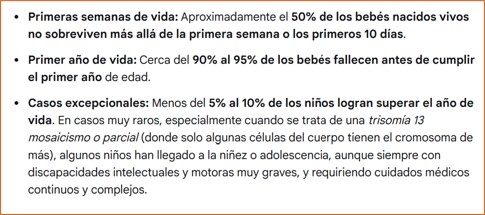
Datos de sobrevida:
• Primeras semanas: ~50% no sobrevive más allá de la primera semana o 10 días.
• Primer año: ~90% a 95% fallece antes del año.
• Casos excepcionales: Menos del 5% al 10% supera el año (casos de mosaicismo o trisomía parcial).
📌 Evaluación📝 Interactivo
Quiz de Repaso Académico
Utiliza estas preguntas para evaluar la retención del tema con tus compañeros al finalizar la presentación oral:
1. ¿Cuál es el estudio citogenético definitivo para examinar el mapa cromosómico completo e identificar las trisomías?
2. El mecanismo genético responsable de más del 90% a 95% de las trisomías es:
3. ¿Qué trisomía presenta característicamente la postura de puños cerrados con dedos índices superpuestos sobre el medio y meñique sobre el anular?
📌 Entregable📄 Impresión Plegable
Cartilla de Repaso / Folleto Tríptico
Haz clic en el siguiente botón para imprimir o guardar en PDF esta cartilla plegable de 3 cuerpos diseñada exactamente para tus compañeros de clase:
PANEL 1: Genética y T21
Bases: 46 cromosomas (23 pares). Gametos por meiosis (23).
No Disyunción: Error meiótic >90-95% → 47 cromosomas.
T21 (Down): Copia extra en #21.
Hipotonía, perfil plano, pliegue simiano.
Defectos septales cardíacos (DSAV/CIV).
Detección: TN ≥ 3mm, cariotipo.
PANEL 2: T18 y T13
T18 (Edwards): Copia extra en #18.
RCIU, microcefalia, occipucio prominente.
Puños cerrados con dedos superpuestos.
Pies en mecedora, alta mortalidad.
T13 (Patau): Copia extra en #13.
Holoprosencefalia, labio leporino.
Polidactilia, 90-95% fallece al año.
PANEL 3: Rol Enfermería
Cuidados Técnicos:
Monitorización vital y vía aérea.
Alimentación asistida (pos. semi-sentada).
Seguimiento multidisciplinar (cardio/neuro).
Comunicación empática y soporte paliativo familiar.